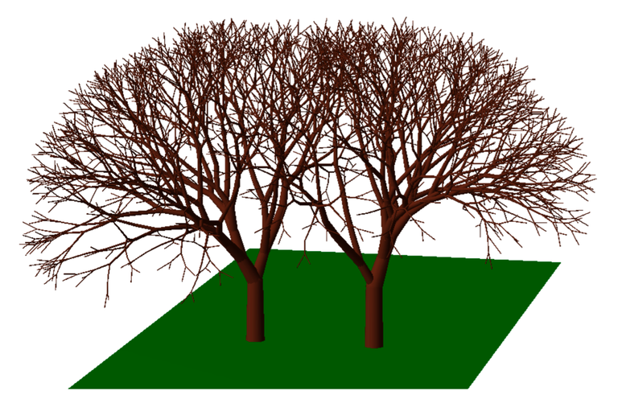
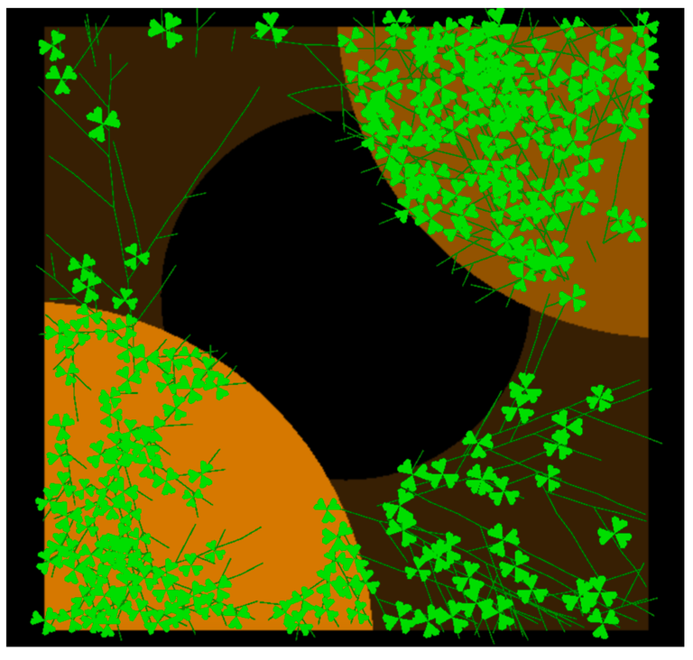

<div class="page" title="Page 1"><div class="section"><div class="layoutArea"><div class="column"><h2>Human Ecology and differential equations</h2>
<div class="page" title="Page 1"><div class="section"><div class="layoutArea"><div class="column">
<p>A reflection on the places and roles of mathematics in human ecological undertakings would without a doubt be misleading if it were not to include mention of differential equations and their long history of being used for dynamical systems modelling.</p>
<p>Differential equations are the dominant tool for dynamical systems modelling. They offer researchers a starting point from which to model real-world interactions in environments without having to know the exact processes that underly them. In essence, they allow researchers to study the dynamics of a system from derivatives of the approximate process functions that compose it, and depending on whether a system of differential equations is anlytically solvable, that is to say, whether one can closed form solution to the system, they may allow researchers to model a given dynamic system with exact precision.</p>
<p>Differential equations are the go-to tool for complex dynamical systems modelling and analysis, and are used extensively to model physical, chemical, and purely mathematical processes. From the beginning of the century to the mid-1970s, ecologists, meteorologists, and financiers attempted to apply the same techniques to their fields (see for instance the work of Edward Lorenz or Stephen Smale). Ecologists and social scientists, including human ecologists use these approaches extensively (see An Ecological Introduction, K. E. Boulding, 1950, or Complex ecosystem and sustainable development, Ma Shijun &amp; Wang Rusong, 1990). Nonetheless, there is a gap between theoretical (more mathematical and computational) ecology and field ecology (more observational and dialogical).</p>
<p>Perhaps we'll find the answer in the properties of naturally occurring systems. In a controlled environment in which the system is closed, sets of approximate process functions can be used to describe and model the system. In that case, systems of differential equations may be an appropriate modelling tool. But there’s a catch: Most naturally occurring systems are adaptive: as their dynamics evolve, the approximate processes functions that constitute an adaptive system would change, as the rules governing the system are in unpredictable and constant flux. To capture this using differential equations, we need to start with a system description that captures all the future changes in system behaviour, and this is impossible to know a priori. The cause for these changes is that the approximate processes functions are part of the systems themselves, and dependent on material and relational processes that occur within the respective systems, which are described by other approximate process functions. The interactions between these functions can form extensive networks which describe complicated mixes of flows between stocks. Differential equations can model Dynamic Systems but are poor models of Adaptive Systems. For this latter system type, differential equations are of very limited help.</p>
<div class="page" title="Page 1"><div class="section"><div class="layoutArea"><div class="column"><h2>Do we need to model everything?</h2>
<div class="page" title="Page 1"><div class="section"><div class="layoutArea"><div class="column">
<p>Before I reflect on other mathematical techniques and philosophies, and how I feel they relate to Human Ecology and could find their place in human ecological dialogue, I'd like to consider the modes of apprehension of the world that emboldened many researchers throughout history to attempt to model the natural world.</p>
<div class="page" title="Page 2"><div class="section"><div class="layoutArea"><div class="column">
<p>It is not self-evident that the world needs to be modelled. In fact, the world exists already, it’s out there waiting for us, what use is a copy of the process to us if it is only a shadow of the real thing? Why not just go out and enjoy it? There are so many ways of learning about the world and the systems within it. Often neglected is hands-on learning one can earn from experiencing the world from within: physically and emotionally, to be consumed and surrounded by the experience of being, feeling, seeing, and touching.</p>
<p>For my part, I like to think that while experiential learning in the world is a primordial need which all should get to experience, there is still a place for analysis, deconstruction, and quantitative reasoning. For one, all of these things are part of the world too, they are aspects of our environment. If human ecology concerns itself with human-environment interactions and the place of human beings in the biosphere, then we should see mathematics mathematics as an essentially human ecological venture. While counting is not an exclusively human trait, the depth and variety of human counting techniques are unique in the animal world.</p>
<p>Mathematical modelling of nature boomed in the 17th century with the development of calculus, European materialism, utilitarianism, and determinist philosophy. These frameworks were immensely successful and traveled extensively through trade, scholarly writing, and through the colonial rule and subjugation of nation states by European powers. I bring this up not to brush off the desire to model nature, but to illustrate that it is a worldview that exists in continuity with the cultures and writing of a very small group of people in a very small part of the world, and at a very specific time in history. We are perhaps needlessly limiting ourselves to a relationship to nature which in some capacity must factor in this lens.</p>
<p>I’ll end on counting as an interesting subject: counting - what counts? Pun intended. Do trees count? Are the processes through which trees grow and multiply, branch, and ache forms of counting, or are they just material reactions? And does it matter? Can an animate but inorganic process count?</p>
<div class="page" title="Page 2"><div class="section"><div class="layoutArea"><div class="column"><h2>Not-entirely deterministic systems</h2>
<div class="page" title="Page 2"><div class="section"><div class="layoutArea"><div class="column">
<p>As a language of nature, mathematics has the enviable property that its descriptions of mathematical phenomena transcend mathematics into all dimensions of the natural world. If a mathematical phenomenon produces a certain type of behaviour, and as observers, we notice a similar phenomenon in nature, we can be quite certain certain that the natural phenomenon is related to the mathematical one. Even though the same process may not be a play in either one, both share a sameness, and this sameness opens a pathway to mathematics ←→ nature exchanges.</p>
<p>We are used to using mathematics to discover Nature, or using mathematics to explain it, but we hardly ever hear of the reverse: using nature to explore mathematics, to explain mathematics, or even as a map to mathematical exploration.</p>
<p>I have a strong hunch that mathematics discovered through this process, especially mathematical processes and algorithms discovered through such an approach would replicate the properties of processes that occur in nature. These processes would often be not entirely deterministic, part of not entirely deterministic systems, of which we understand very little today. Exploration of mathematics through nature might yield (with some luck and creative thinking) insight into the inner functioning of complex adaptive systems, and help us breakaway from a purely normative or descriptive understanding of mathematics which sees mathematics as either dictating nature’s inner workings, or passively reflecting it. Mathematics are a conceptual framework that abstracts relationships that occur in nature, but we only have use for mathematics insofar as it describes the nature that it is a part of. How could nature not describe maths, just as mathematical assertions assert the dynamics, relationships, and laws of nature?</p>
<div class="page" title="Page 3"><div class="section"><div class="layoutArea"><div class="column"><h2>Mathematics as a shimmer through a lens</h2>
<div class="page" title="Page 3"><div class="section"><div class="layoutArea"><div class="column">
<p>To close this reflection piece, I’d like to consider one outcome of using nature as an exploratory tool for maths: L-systems.</p>
<p>L-systems are formal systems which use a combination of rules or substitution of symbols of a formal language for others using sometimes deterministic rules, sometimes stochastic rules, and sometimes a combination of both. L-systems were first discovered by Aristid Lindenmayer, a biologist who studied the growth patterns of bacteria such as the <em>Anabaena catenula</em>. Lindenmayer originally intended these systems to provide a formal description of the development of bacteria, and to illustrate the neighbourhood relationships between plant cells. However, they were quickly extended to describe larger organisms with branching structures such as plants.</p>
<p>The following figures showcase some structures generated through L-systems. As you view them, I would like to invite you to think of them not as a flawed mathematical representation of nature, but as a beautiful human enabled nature-informed representation of maths.</p>
<div class="gallery-wrapper"><div class="gallery" data-columns="3" data-is-empty="false" data-translation="Add images"><figure class="gallery__item"><a data-size="1802x786" href="../../media/posts/mathematical-systems-thinking-for-human-ecology/gallery/lsystem1.png"><figure class="post__image post__image--center"></figure></a></figure><figure class="gallery__item"><a data-size="1838x1200" href="../../media/posts/mathematical-systems-thinking-for-human-ecology/gallery/lsystem2.png"><figure class="post__image post__image--center"></figure></a></figure><figure class="gallery__item"><a data-size="1202x1146" href="../../media/posts/mathematical-systems-thinking-for-human-ecology/gallery/lsystem3.png"><figure class="post__image post__image--center"></figure></a></figure>
<div class="page" title="Page 4"><div class="section"><div class="layoutArea"><div class="column">
<p><strong>Note:</strong> L-system models generated using Vlab on macOS, courtesy of the Algorithmic Botany lab at University of Calgary.</p>